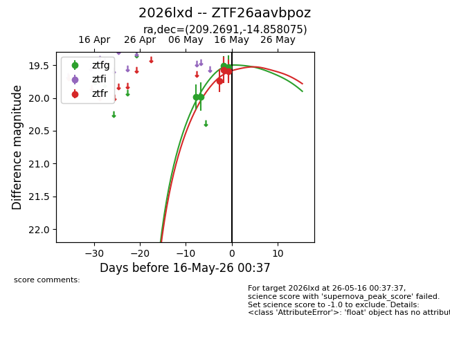
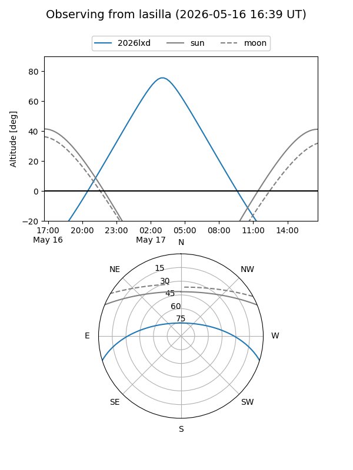
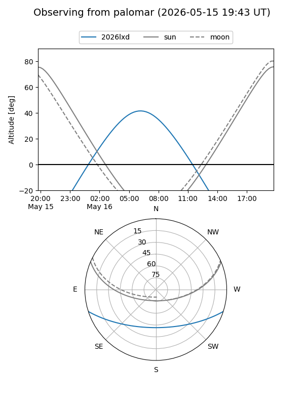
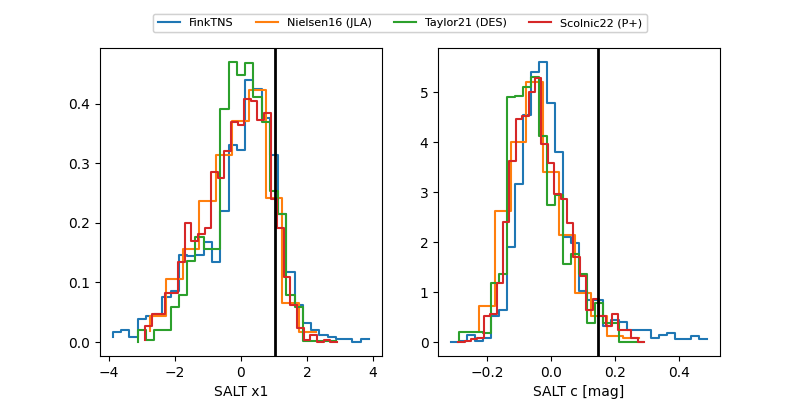

2026lxd
Target 2026lxd at 2026-05-16 00:39
Aliases and brokers:
FINK: link
Lasair: link
ALeRCE: link
TNS: link
YSE: link
alt names
ZTF26aavbpoz (ztf,fink_ztf)
2026lxd (tns,yse)
Coordinates:
equatorial (ra, dec) = 209.2691,-14.85807
equatorial (HMS+DMS) = 13:57:04.58,-14:51:29.07
galactic (l, b) = (325.6871,+45.09388)
Flags:
Photometry:
last ztfg=19.54, ztfr=19.59
4 ztfg, 3 ztfr detections
Lightcurve

Visibility


Additional plots
